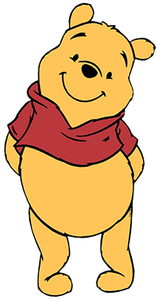
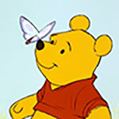

Winnie the Pooh is a famous character from the franchise “Winnie the Pooh” by A.A. Milne. He is a teddy bear belonging to the boy, “Christopher Robin” who comes to life in the stories along with his friends, Robins other toys.
He is a bear with yellow fur and is quite short with a round belly. He has black dot eyes, a short snout and small round ears. Occasionally the stitching on his belly and bottom rip open revealing the white stuffing inside. He wears a short red shirt.

Character's Personality
Pooh is generally very kind and friendly. He has the demeanour of childlike innocence while also being very optimistic and holds some wisdom that helps in times of despair. His friends often go to him when they need help or someone to talk to. He loves honey! He has lots of honey pots in his house but they often turn out to be empty and he is always showing up at his friends to see if they have any. Pooh is entitled as the leader of the group as he is Christopher Robin's favourite toy.

Character's Background
Winnie is based on a real-life bear in a London Zoo brought there by a Canadian soldier who bought her as a cub in Winnipeg on his way to WW1. They called her “Winnipeg bear”; hence the nickname Winnie. Once Winnie got older the soldier loaned her to the zoo until he realized she belonged there and how loved she was, so he let her live there. There one of his most frequent visitors was a boy Christopher Robin. Who named his own stuffed teddy bear after her along with his friends pet swan, “Pooh” to get the name Winnie the Pooh.